1. Cómo ingresar al sistema
- 1 Abra su navegador (Chrome, Edge, Firefox).
- 2 Vaya a la dirección http://intranet.asamblea.gob.sv.
- 3 Seleccione la opción de E-Parlamento.
- 4 Busque el ícono del Transporte Solicitudes y haga clic sobre él.
- 5 Ingrese su usuario y contraseña (los mismos que usa en su computadora de la Asamblea).
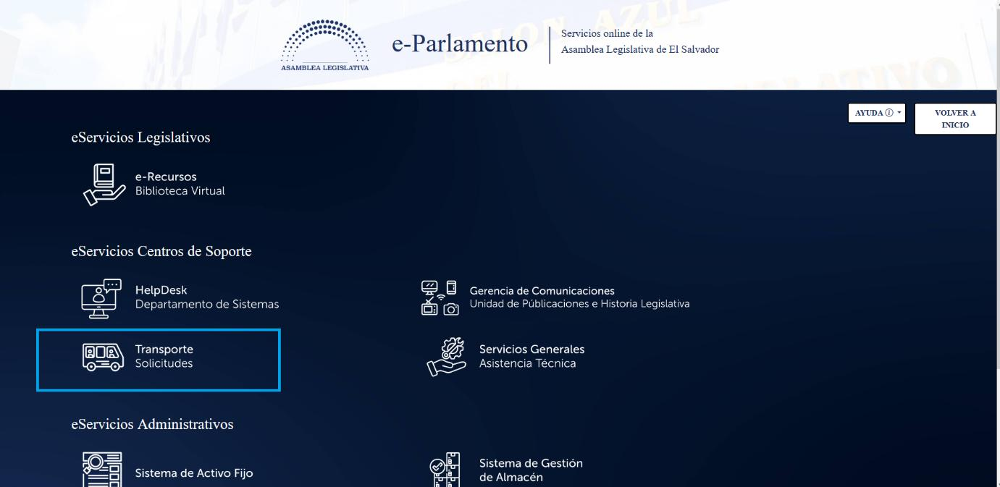
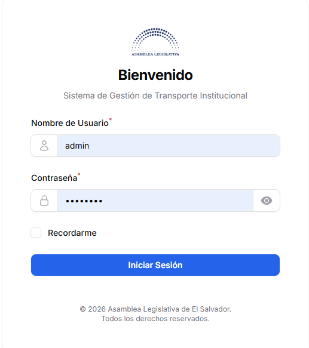
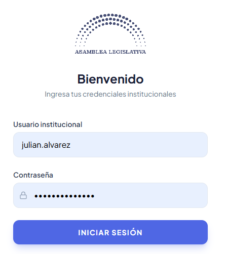
2. ¿Qué es el sistema?
Es una plataforma web para gestionar todo lo relacionado con la flota vehicular de la Asamblea Legislativa. Dentro del sistema se pueden hacer tres tipos de solicitudes:
| Tipo de solicitud | ¿Para qué sirve? |
|---|---|
| Transporte 🚗 | Pedir un vehículo con motorista para una misión o viaje oficial. |
| Combustible ⛽ | Solicitar cargas de gasolina para los vehículos. |
| Mantenimiento 🔧 | Reportar averías o programar servicios (taller, llantas). |
El sistema está dividido en 4 pantallas, cada una dedicada a un proceso específico dentro del flujo de trabajo del Departamento de Transporte. Las 4 pantallas se pueden instalar como aplicación en cualquier dispositivo móvil.
Instalar el sistema en su móvil (APP)
Todas las pantallas del sistema tienen la capacidad de instalarse como una app en cualquier dispositivo móvil. Para hacerlo:
- Abra el sistema desde el navegador de su móvil (Chrome o Safari).
- Toque los 3 puntos (menú) en la parte superior del navegador.
- Seleccione la opción "Agregar a la pantalla principal" o "Instalar app".
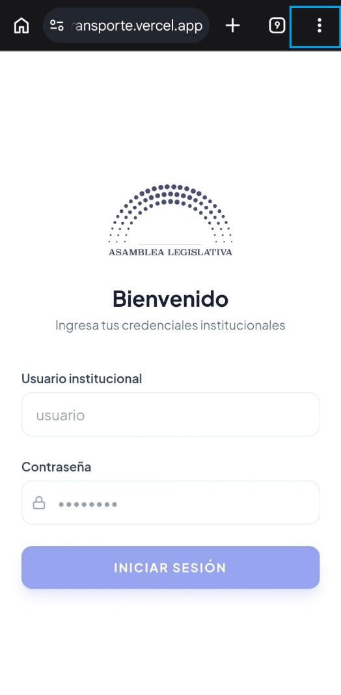
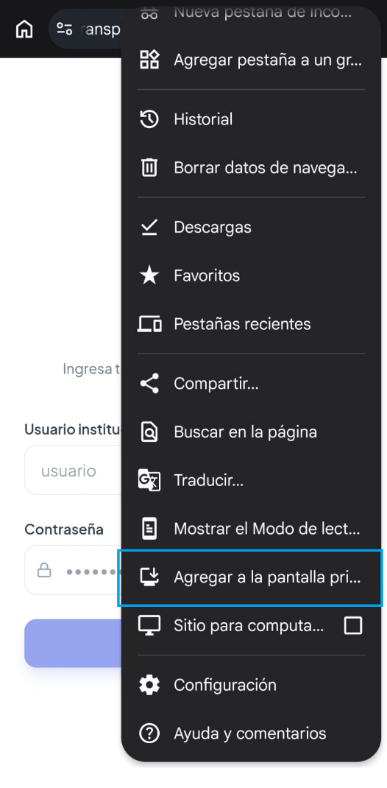
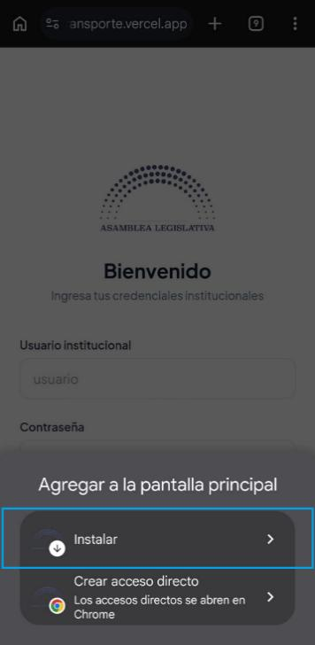
3. Pantalla 1: El Sistema de Transporte (panel principal)
Cuando usted ingresa al sistema siendo operativo, jefe, administrador o liquidador, lo primero que verá es la pantalla principal. Esta no es una pantalla con una sola función, sino que es el "centro de comando" del sistema. Desde aquí puede acceder a todas las funciones a través del menú lateral izquierdo.
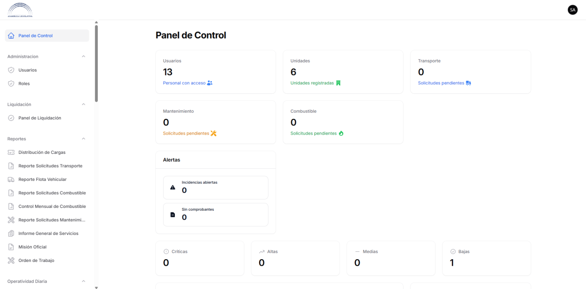
¿Qué encuentra en esta pantalla?
En el lado izquierdo hay un menú con varias secciones agrupadas. Cada sección contiene pantallas relacionadas con una parte del trabajo del Departamento de Transporte:
| Sección del menú | ¿Para qué sirve? |
|---|---|
| Un resumen con números y gráficos de lo que está pasando en el departamento (solicitudes pendientes, costos, alertas). | |
| Aquí trabajan los operativos y el jefe: revisan solicitudes, asignan vehículos, aprueban o rechazan. | |
| Aquí se crean y se ven todas las solicitudes de transporte, combustible y mantenimiento. | |
| El "directorio" de la flota: vehículos y motoristas registrados. | |
| Datos técnicos de los vehículos (marcas, modelos, colores, motores). | |
| Datos de toda la institución: unidades solicitantes, departamentos, proveedores, etc. | |
| Control de entrada y salida de vehículos (recepción y entrega). | |
| Gestión de gasolina a granel y el plan de viajes del día. | |
| Cierre financiero de las solicitudes de combustible y mantenimiento. | |
| Descarga de documentos PDF, Excel y CSV para archivo. | |
| Gestión de usuarios del sistema y sus roles. | |
| Bitácora de todo lo que pasa en el sistema (quién hizo qué y cuándo). |
Los catálogos: ¿qué son?
Son las "listas maestras" que alimentan el sistema. Piense en ellos como los directorios telefónicos de la institución:
- Vehículos: la lista de todos los carros de la flota con sus datos (placa, marca, modelo, color, etc.)
- Motoristas: la lista de los conductores autorizados.
- Unidades Solicitantes: las oficinas o direcciones que pueden pedir servicios.
- Proveedores: los talleres y estaciones de gasolina autorizados.
- Y muchos más: tipos de licencia, departamentos, municipios, etc.
Estos catálogos los maneja el personal autorizado. Como usuario normal, usted solo los ve cuando necesita seleccionar una opción en un formulario.
4. Pantalla 2: Panel de Solicitudes (Mis solicitudes / Nueva)
Es el módulo donde los empleados de la Asamblea crean y dan seguimiento a sus solicitudes de transporte, combustible y mantenimiento.
Funcionalidad práctica
Si usted necesita:
- Un vehículo con motorista para realizar una misión oficial → crea una Solicitud de Transporte.
- Gasolina para un vehículo o misión oficial → crea una Solicitud de Combustible.
- Reparar o dar mantenimiento a un vehículo → crea una Solicitud de Mantenimiento.
Cada solicitud pasa por un flujo de revisión: el equipo operativo la revisa, el jefe la aprueba y luego se ejecuta. Usted puede ver el estado de su solicitud en todo momento desde esta pantalla.
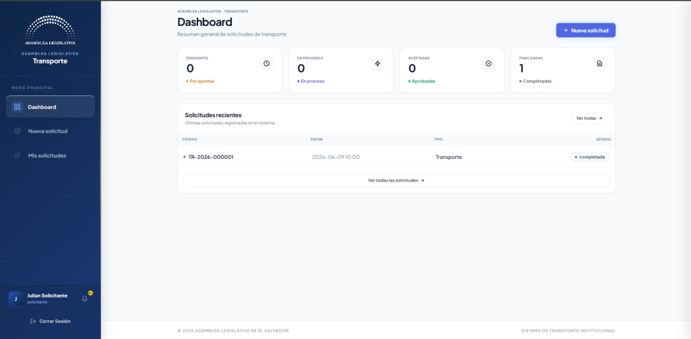
Estados de una solicitud
| Estado | Etiqueta | ¿Qué significa? |
|---|---|---|
| Pendiente | Pendiente | La solicitud acaba de llegar, nadie la ha revisado aún. |
| En revisión | En revisión | Un operativo la tomó y está trabajando en ella. |
| Pre-aprobada | Pre-aprobada | El operativo la validó y está esperando la decisión del jefe. |
| Aprobada | Aprobada | El jefe la aprobó. La solicitud sigue su curso. |
| Rechazada | Rechazada | El jefe la rechazó porque no cumple requisitos. |
5. Pantalla 3: Módulo de Motorista (disponible para móviles)
Es una aplicación diseñada exclusivamente para los conductores, a la que ingresan desde su teléfono móvil o tableta. No es la misma pantalla web que usa el resto del personal — es una aplicación más sencilla, con botones grandes y pensada para usarse mientras se conduce o en la calle.
¿Para qué sirve?
Permite al motorista:
- Ver los viajes que le asignaron.
- Registrar cada etapa del viaje (salida, llegada, retorno, finalización).
- Marcarse como disponible o no disponible.
- Adjuntar comprobantes (incapacidades, permisos).
Está dividida en 4 pantallas internas a las que se accede desde un menú en la parte inferior o lateral.
5.1 Pantalla 3.1 — Panel Principal (Inicio del Motorista)
Es lo primero que ve el conductor al iniciar sesión. Muestra solo la información que le sirve en el día a día:
| ¿Qué muestra? | ¿Para qué sirve? |
|---|---|
| Viajes del día | Tarjetas grandes con el próximo viaje: destino, hora, solicitante. La más importante tiene un botón "Iniciar Viaje" para empezar la ruta. |
| Contadores rápidos | ¿Cuántos viajes tiene "Por Iniciar"? ¿Cuántos "En Ejecución"? ¿Cuántos completó este mes? |
| Próximas asignaciones | Viajes programados para días futuros — solo para consulta, no se puede iniciar hasta el día correspondiente. |
| Campana de notificaciones | Si la jefatura le asigna un nuevo viaje, le llega una alerta en vivo con un número rojo en la campana. |
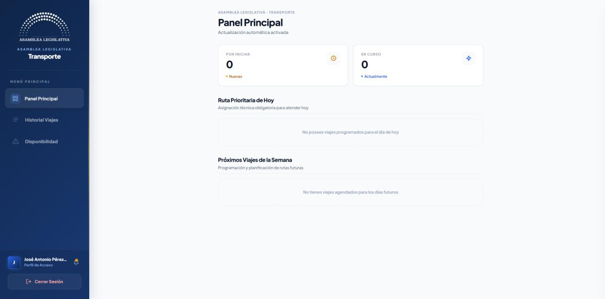
5.2 Pantalla 3.2 — Ruta Activa (Modo Conducción)
Cuando el motorista hace clic en "Iniciar Viaje", se abre esta pantalla que lo guía paso a paso. La pantalla bloquea distracciones y solo muestra lo necesario para completar la ruta.
La ruta tiene 4 fases obligatorias que el conductor debe ir marcando una tras otra:
| Fase | ¿Qué hace el motorista? |
|---|---|
| 1. Iniciar Viaje | Sale de la Asamblea. Marca la hora de salida real. |
| 2. Llegada a Destino | Llega al lugar del viaje. Marca la hora de llegada. |
| 3. Iniciar Retorno | Termina la misión y emprende el regreso. Marca la hora. |
| 4. Finalizar Viaje | Regresa a la Asamblea. Marca la hora de finalización. |
Cada fase tiene un botón grande que cambia según corresponda ("Iniciar Viaje", "Registrar Llegada", "Iniciar Retorno", "Finalizar Viaje"). Conforme avanza, se va llenando una línea de tiempo que muestra las horas registradas.
Al finalizar, el sistema calcula automáticamente las horas reales del viaje y las agrega a la bitácora del motorista.
5.3 Pantalla 3.3 — Historial de Viajes
El archivo personal del motorista. Muestra todos sus viajes, ordenados por mes y año. Puede seleccionar un mes específico para ver:
- Fecha del viaje.
- Destino.
- Estado (Completado en verde, Cancelado en rojo, etc.).
- Hora de inicio y finalización.
Le sirve al conductor para auditar su propio trabajo — por ejemplo, si necesita comprobar cuántas horas manejó la semana pasada.
5.4 Pantalla 3.4 — Disponibilidad e Incapacidad
Esta pantalla le permite al motorista comunicarle al sistema si está disponible o no para trabajar. Tiene un interruptor grande:
- Verde = Disponible — puede recibir viajes.
- Rojo = No Disponible — el sistema lo excluye automáticamente de las asignaciones.
Al pasarlo a "No Disponible", aparecen dos campos:
- Motivo: explica por qué no está disponible (enfermedad, permiso, cita médica, etc.).
- Adjuntar comprobante: puede tomar una foto o subir un archivo (incapacidad médica, permiso firmado).
El sistema guarda un historial de todos los cambios de estado del motorista, para que la jefatura pueda consultar después.


Automáticamente, el motorista desaparece de las listas de selección en las pantallas de asignación del operativo y del jefe. Nadie puede asignarle un viaje mientras esté en ese estado. Cuando vuelva a marcarse como "Disponible", reaparecerá.
6. Pantalla 4: Módulo de Aprobaciones (Jefatura)
Es el centro de decisiones del jefe del Departamento de Transporte. Aquí llegan todas las solicitudes que ya fueron revisadas y validadas por el equipo operativo, y que están listas para que el jefe dé el visto bueno final.
¿Cómo está organizada?
La pantalla tiene tres partes principales:
Parte 1: Resumen (Tarjetas en la parte superior)
Cuatro tarjetas que muestran de un vistazo cuántas solicitudes hay en cada estado:
- Pendientes: las que esperan su decisión.
- En Ejecución: las que ya están en marcha.
- Aprobadas: las que ya aceptó este período.
- Completadas: las que ya se terminaron.
Parte 2: Lista de solicitudes pendientes
Una tabla o lista con las solicitudes que están esperando su decisión. Cada una muestra: tipo (transporte, combustible o mantenimiento), código de la solicitud, solicitante, fecha y prioridad.
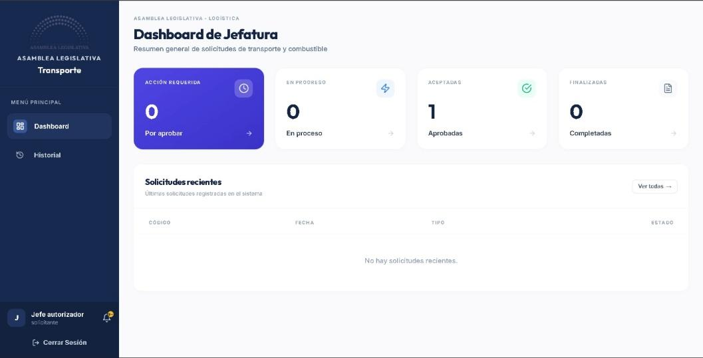
Al hacer clic en una, se abre la pantalla de decisión, que tiene tres columnas:
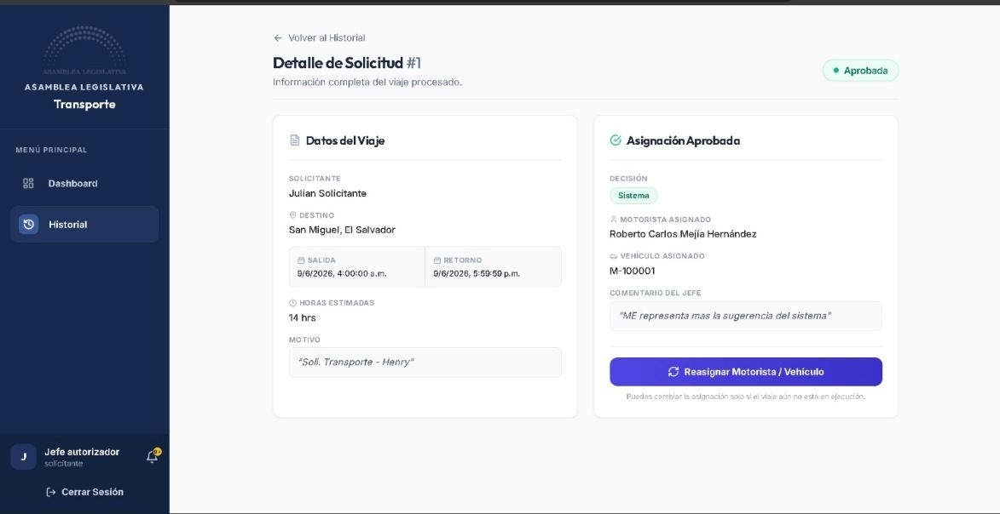
| Columna | ¿Qué muestra? |
|---|---|
| 1. Datos del Viaje | La información que envió el solicitante: destino, fechas, horas estimadas, motivo. Estos datos son de solo lectura, no se pueden modificar. |
| 2. Asignación del Operativo | Qué vehículo y qué motorista eligió manualmente el equipo operativo. También muestra las horas acumuladas que lleva el motorista en la semana (para evitar fatiga). |
| 3. Sugerencia del Sistema | Lo que la inteligencia del sistema recomienda: un puntaje de compatibilidad (%), el vehículo óptimo y el motorista más descansado disponible. |
Parte 3: Panel de Decisión
En la parte inferior de la pantalla hay una barra fija con:
- Un campo para escribir un comentario (obligatorio).
- Botones para decidir:
| Botón | ¿Qué hace? |
|---|---|
| Aprobar Manual | Aprueba usando la asignación que eligió el operativo. |
| Aprobar Sistema | Aprueba usando la sugerencia del sistema. |
| Condicionar | Devuelve la solicitud al operativo con observaciones para que ajuste algo. |
| Rechazar | Rechaza la solicitud. El sistema notifica al solicitante con el motivo. |
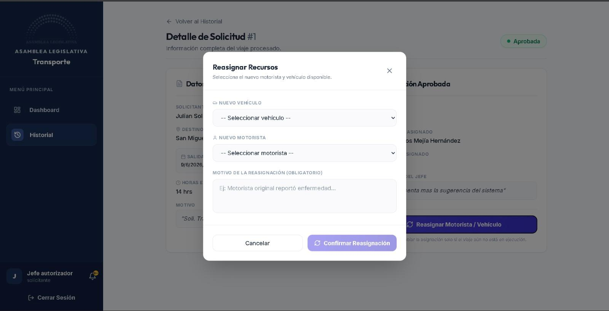
¿Qué pasa después de aprobar?
Cuando el jefe aprueba una solicitud:
- Transporte: aparece una notificación para que el operativo asigne vehículo y motorista. Si ya estaban asignados, el sistema notifica al motorista directamente en su aplicación móvil.
- Combustible: el sistema queda listo para que se asignen los vales de gasolina.
- Mantenimiento: el sistema genera la orden de trabajo para el taller.
Reasignar después de aprobar
Si el jefe aprobó una solicitud, pero después necesita cambiar el vehículo o motorista (por ejemplo, porque el motorista se enfermó), puede:
- Entrar al detalle de la solicitud ya aprobada.
- Usar el botón "Reasignar Motorista/Vehículo" (disponible solo si el viaje aún no ha iniciado).
- Seleccionar un nuevo conductor o vehículo disponible.
Historial de decisiones
Cada aprobación o rechazo queda registrado en el sistema con:
- Quién tomó la decisión.
- Cuándo se tomó.
- Qué comentario se dejó.
- Qué opción se eligió (manual o del sistema).
Esto permite auditar cualquier viaje en el futuro.
7. Recursos adicionales
Esta guía y muchas más están disponibles dentro del sistema. En la parte superior derecha de la pantalla, junto a su foto de perfil, verá un icono de libro abierto 📖. Al hacer clic, se despliega un menú con los siguientes manuales:
- Manual de Uso General (este documento).
- Manual del Rol Operativo — para el personal que revisa y prepara solicitudes.
- Manual del Rol Super Admin — para administradores del sistema.
- Manual del Motorista — para conductores sobre el uso de la app móvil.
- Roles y Accesos — descripción de todos los roles del sistema.
Si encuentra errores inesperados, datos que no se guardan, o cualquier comportamiento extraño, repórtelo al departamento de TI. Incluya el código de la solicitud (ej: ST-2026-000123) y describa qué estaba haciendo cuando ocurrió el problema.